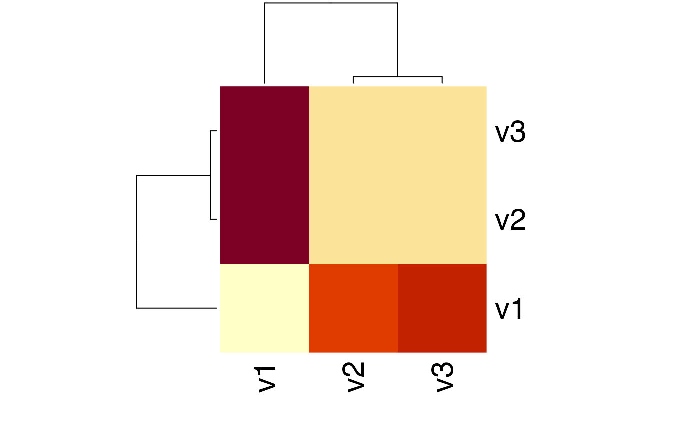

This function computes the Kullback-Leibler divergence of two probability distributions P and Q.
KL(x, test.na = TRUE, unit = "log2", est.prob = NULL, epsilon = 1e-05)
| x | a numeric |
|---|---|
| test.na | a boolean value indicating whether input vectors should be tested for NA values. |
| unit | a character string specifying the logarithm unit that shall be used to compute distances that depend on log computations. |
| est.prob | method to estimate probabilities from a count vector. Default: est.prob = NULL. |
| epsilon | a small value to address cases in the KL computation where division by zero occurs. In
these cases, x / 0 or 0 / 0 will be replaced by |
The Kullback-Leibler divergence of probability vectors.
$$KL(P||Q) = \sum P(P) * log2(P(P) / P(Q)) = H(P,Q) - H(P)$$
where H(P,Q) denotes the joint entropy of the probability distributions P and Q and H(P) denotes the entropy of probability distribution P. In case P = Q then KL(P,Q) = 0 and in case P != Q then KL(P,Q) > 0.
The KL divergence is a non-symmetric measure of the directed divergence between two probability distributions P and Q. It only fulfills the positivity property of a distance metric.
Because of the relation KL(P||Q) = H(P,Q) - H(P), the Kullback-Leibler divergence of two probability distributions P and Q is also named Cross Entropy of two probability distributions P and Q.
Cover Thomas M. and Thomas Joy A. 2006. Elements of Information Theory. John Wiley & Sons.
Hajk-Georg Drost
# Kulback-Leibler Divergence between P and Q P <- 1:10/sum(1:10) Q <- 20:29/sum(20:29) x <- rbind(P,Q) KL(x)#>#> kullback-leibler #> 0.1392629# Kulback-Leibler Divergence between P and Q using different log bases KL(x, unit = "log2") # Default#>#> kullback-leibler #> 0.1392629KL(x, unit = "log")#>#> kullback-leibler #> 0.09652967KL(x, unit = "log10")#>#> kullback-leibler #> 0.0419223# Kulback-Leibler Divergence between count vectors P.count and Q.count P.count <- 1:10 Q.count <- 20:29 x.count <- rbind(P.count,Q.count) KL(x, est.prob = "empirical")#>#> kullback-leibler #> 0.1392629# Example: Distance Matrix using KL-Distance Prob <- rbind(1:10/sum(1:10), 20:29/sum(20:29), 30:39/sum(30:39)) # compute the KL matrix of a given probability matrix KLMatrix <- KL(Prob)#>